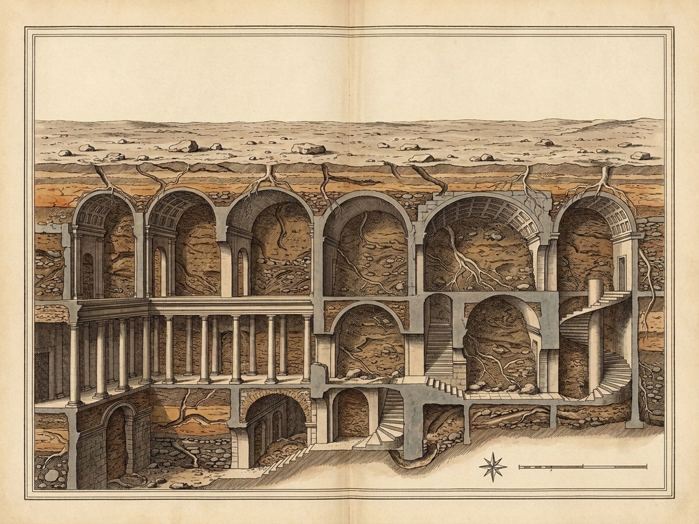
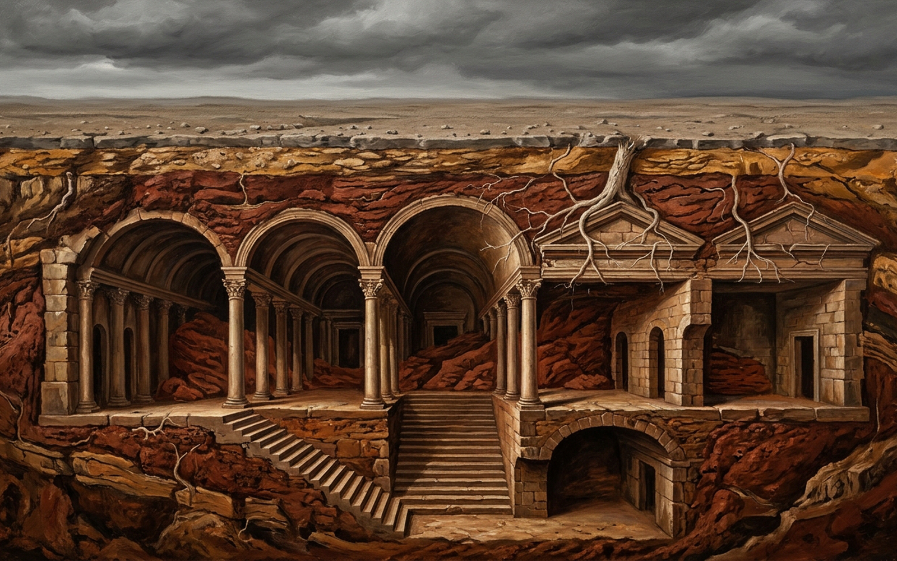

ARGIA
Earth instead of air — clay packs every chamber to the vault; deserted stone lies silent above.
AIR
0.00 · CLAY 1.00
ABOVE
0 SEEN
HEARD
0 / 0
V
Cutaway
P
Plates
M
Sound
R
Reset
Packed Lithic Section
DEPTH 24m · AIR 0 · EARTH 1.0
Streets choked solid with compacted dirt; probe strata [1–3] or press ear to stony night ground [N + E + D].
1
Negative Stair
Cast-clay steps set flush in reverse upon every stone flight.
2
Clay Chambers
Rooms packed to vaulted ceilings beneath rocky cloud strata.
3
Roots & Worms
Damp black tunnels & twisting roots; prone stillness in the dark.
N
Night
NOON · 0%
E
Press Ear to Stone
D
Slam Buried Door
EAR+NIGHT: NO · HEARD: 0 · MUFFLED: 0
Harsh daylight over deserted scree — switch to night [N] and press ear [E] to hear deep stone.
STRATIGRAPHIC ROYAL PLATES — ARGIA
Survey Plate (map.png)
Lithic View (image.png)
Z
1.8× Loupe
Esc
Close


PENDING_IMAGE_GENERATOR_QUOTA — Engraved packed-clay lithic section rendered live from solid-earth coordinates.